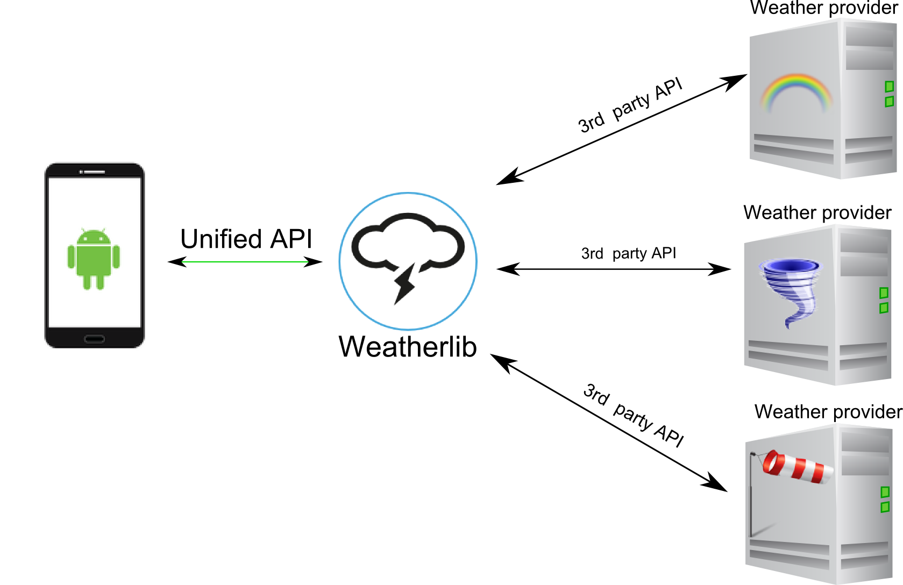
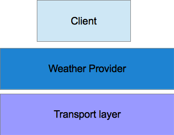

Overview
Weatherlib is an Android library that helps developers to create weather app easily and fast.
Weatherlib aggregates proprietary 3rd party weather APIs and presents those functions through a simple, unified, normalized API.
By aggregating and normalizing 3rd party APIs, Weatherlib creates a single access point to those weather services without concern for service and API changes.
The library can connect to several weather provider using a specific protocol and it can create the right request according to the weather provider and parse the response.
The library abstracts 3rd party protocol implementation providing the weather information in the same way indipendently from the weather provider chosen.

With this lib you can focus your mind only on the app development without worrying about extracting information from weather provider or handling request/response.
Main features
These are the main features provided by the WeatherLib:
-
Remote weather service invocation
-
Handling HTTP requests and response in a separate thread respect to the main Android thread, so that you don't have to worry about ANR (Application Not Responding) problems
-
Implement specific protocol to extract information from remote weather server
- Querying the city using name pattern
- Querying the city using geographic coordinates
- Querying actual weather condition
- Querying forecast weather condition
- Querying historical weather condition
- Retrieve default weather condition icon for each weather provider
- Abstract app implementation from the specific weather provider selected, so that you can reuse the same app with different weather provider
- Handling connection errors and parsing errors
- Implementing a notifition/listener mechanism so that your requests don't get locked while the library is processing the response or while the server is contacted
- Getting radar images
- Getting specific weather provider feature (like webcams and so on)
- Support the most used Android HTTP library (like Android Volley, OkHttp and so on)
- You can easily extend the lib and implement your weather provider
Supported Weather provider
The library supports the following weather provider
Library structure
The library is built using a moduare structure so that each part can be changed and customized. The strucutre looks like the figure shown below:

As you can notice, the lib is made by three different layer:
- The client layer that exposes an uniform interface to the Android apps
- The Weather provider that takes care to parse the proprietary protocol and normalize it showing a standard class model
- The Transport layer that handles the HTTP connection details using specific libraries
We will see in the next pages how we can use the library.